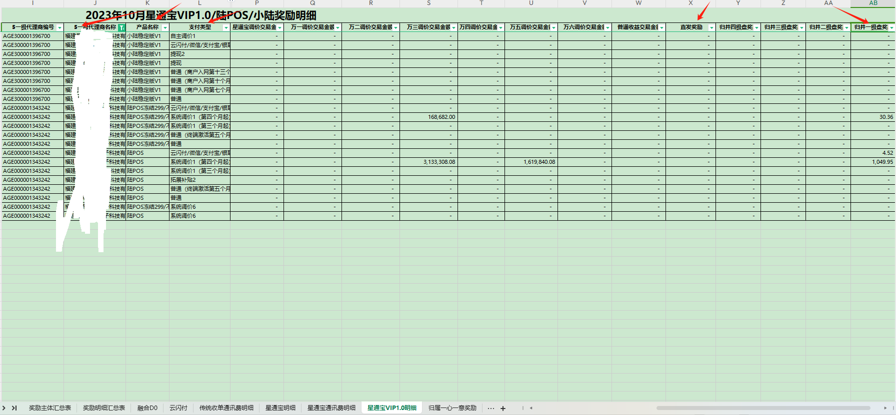
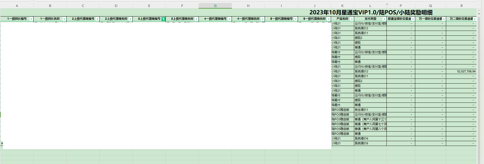
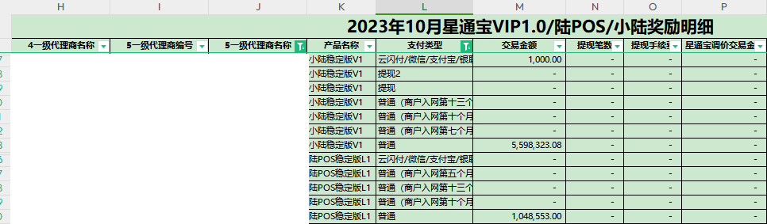

月结分润知识点：
一、为什么会有月结分润
- 1.服务商早期政策没有做日结；
例：传统收单平台（18年之前的星通宝政策）
判断方式：《收单平台》-运营管理- 代理商管理-代理商信息管理_查看/服务商日结分润信息_运营；
通过该菜单判断服务商的平台开立时间以及日结维护情况，若日结分润信息菜单查询不到数据，则说明服务商没有相关日结分润政策
- 2.服务商日结分润被关闭
可通《 清结算平台》-代理商管理-挂起总表_查询 菜单核实服务商日结关闭情况
- 3.服务商成本有被调整过
可通过《超级POSM平台》-综合管理-运营管理-服务商信息变更审核-服务商结算成本变更审核 菜单查询是否有变更记录
服务商日结成本变更是次日生效，但我司计算当月的分润金额时是按照生效后的成本进行结算，因此会导致服务商有月结收益。
例：
15日申请一级变更成本通过，则16日成本按照变更后的成本结算， 在次月计算分润数据中1-15日的交易也会按照新的成本结算，这部分的收益与日结的差价即为月结收益；
二、月结分润如何结算
- 每月15-26号为我司付款周期， 在付款周期内对于满足条件的服务商会进行付款，若服务商在付款周期内未满足付款条件，会在当月月底最后一个工作日补付一次
三、月结分润怎么查看明细，如何给下级结算
- 若是需要给下级结算，建议通过历史交易进行结算。
根据服务商没有正常日结结算的时间点去导出相应的历史交易
计算方式：
分润=手续费-成本
手续费=交易金额*商户费率
成本=交易金额*代理商结算成本
四、各业务产品当月分润数据查询方式
传统小微：
1.当月分润明细可通过《信息化平台》-综合管理-数据管理-收益-月结分润明细菜单进行查询（该菜单可以查询近一年的分润明细；案例 月结分润明细数据字段说明）2.当月分润汇总数据可通过《信息化平台》-综合管理-数据管理-收益-分润确认菜单进行查询当月各平台的分润合计数据
3.日结分润数据可通过《信息化平台》-综合管理-数据管理-收益-服务商秒结明细菜单进行查询（秒结明细仅支持查询近90天的数据，且需注意本级服务商只能看到自身收益及下级总收益）
4.下级日结的收益可通过《信息化平台》-综合管理-数据管理-收益-下级日结收益查询
星驿付：
1.当月分润明细可通过《信息化平台》-综合管理-数据管理-月结分润明细菜单进行查询（该菜单可以查询近一年的分润明细；案例 月结分润明细数据字段说明）2.当月分润汇总数据可通过《信息化平台》-综合管理-数据管理-收益-分润确认（星驿付）菜单进行查询当月各平台的分润合计数据
3.日结分润和下级日结收益同传统小微
星POS：
1.当月分润明细可通过星POS后台-收单运营管理-报表下载菜单查看一级分润汇总表2.单月分润汇总数据可通过星POS后台-收单运营管理-报表下载菜单查看分润审批表
日结分润知识点：
-
一、日结分润如何结算规则
1.日结收益通过星驿秘书进行结算，当天的交易在星驿秘书首页会显示今日预计收益，次日会结算到秘书余额
2.下级秘书到账余额吗，是扣除过税点
3.上级给下级设置的日结欠款/账款，下级是先抵扣税点后剩余收益用来抵扣账款； -
二、日结分润未收到排查处理流程
1.核实情况是一级未收到还是所属未收到分润
2.核实对应服务商及上级服务商日结状态是否为开启状态（分润是层层结算， 若一级服务商日结是关闭的则子级服务商也无法收到分润）
3.查询当日交易的商户是什么活动的商户，看对应服务商是否有配置对应活动的日结分润政策（一级由我司配置，子级均由上级进行配置）
4.查询当日交易的商户是否是该代理明细，若非该代理名下确认上下级结算价是否一致，若一致收益结算为下级服务商；
注意：传统小微商户若是有参与调价，服务商结算成本需加上调价部分在进行计算分润
5.查询当前服务商日结分润比例是否为0 -
三、服务商如何申请关闭一级的日结分润：
1.上级主体咨询：引导走分润暂缓申请流(不清楚流程可引导找盘主)；
2.本级咨询：若服务商不行走日结，希望走月结结算，也支持申请，可引导走关闭日结申请流程；
网络服务费奖励：
一、网络服务费结算规则
二、相关问题处理思路
服务商咨询如何查询网络服务费收取明细？
传统小微：
1.星通宝、陆POS、小陆、小陆20产品通过代理后台-终端管理-终端网络服务费缴纳明细菜单查询
2.小陆21、陆易付、稳定版等小陆20之后的政策通过代理商后台-商户管理-商户网络服务费缴纳明细菜单查询
星驿付：代理商管理-交易管理-历史交易流水速查
调价奖励分成仅涉及传统小微产品
- 调价奖励分类：
系统调价：按照相应政策规则，我司后台发起的费率调整
自主调价：按照签订的政策，我司给予盘主响应的调价权限，盘主可以进行权限下放；由服务商后台发起的费率调整 - 调价数据如何查询？
我司：分润数据-【传统小微】-【奖励确认表】（AGE:看子表【星通宝VIP1.0明细】 其他业务按产品名称查询）或 超级POSM平台-综合管理-服务商信息管理-报表下载菜单查看（等同服务商后台）
服务商：有该部分收益服务可通过：【信息化平台】-【综合管理】-【报表下载】菜单查看， - 服务商后台查询调价商户交易数据明细
A.收单产品：【信息化平台】-综合管理-数据管理-收益-月结分润明细中 筛选商户类型/自定义商户类型/特殊商户类型字段区分；
B.星收宝产品：【信息化平台】-综合管理-数据管理-收益-月结分润明细中 筛选商户类型/商户类型1字段进行区分;
Tips:
商户类型：字段中有1的为调价，1在第几位说明是第几次调价；例：101100为商户有1,3,4次调价，对应奖励报表中支付类型字段：系统调价1/系统调价3/系统调价4；
自定义商户类型：同商户类型，对应奖励报表中支付类型字段：自定义调价字段
特殊商户类型：为商户入网满X月，服务商结算成本上调部分（具体规则参考政策台账）； - 奖励报表筛选查询方式：
以收单产品为例：
1.查询固定服务商奖励数据明细

查看方式：
1.在【5一级代理商名称/编号】中筛选对应公司
2.筛选需要查询的活动，然后看【支付类型】字段，其中自主调价/系统调价字段为调价奖励字段
3.筛选后查看收益付款方;若为直发奖励则收益付款给查询代理商，若为归并奖励，则看归并给几级盘，查询表格前列对应的服务商即可；
2.查询服务商体系内的奖励数据明细

查看方式： 1.首选需要在拼盘服务商中以下往上，排查咨询服务商所在盘级；例：AGE300001616056 河南开心易付网络科技有限公司（陆）一 可以查询看到为三级盘，上级盘为星联智付；
2.后续可查看【5一级代理商名称/编号】公司名称与其不一致者，则均为该代理的拼盘下级；
3.拼盘下级收益结算方同 固定服务商奖励数据查询方式，看收益归并方；
服务商咨询调价收益数据：
1.先通过奖励确认表查询对应服务商收益是直发还是归并到哪一级拼盘；
2.若收益直发，可以明确告知已结算， 数据可在平台查询；若收益归并拼盘，告知贵司暂无该收益有疑问咨询合作主体
3.若是主体咨询可告知是否直发
什么是结算价差
上下级成本差价：例盘员A结算成本0.51%,盘员B结算成本0.52%；盘员A可以收到盘员B的交易成本差0.01%结算价差数据查询路径
传统收单：
服务商：信息化平台-综合管理-报表下载管理菜单 下载对应产品奖励明细表
数据查看方式：
1.筛选公司名称
2.筛选活动
3.看支付类型；普通、普通（商户入网第xxx个月起）该部分均为服务商名下商户刷卡费率部分结算价差；云闪付/微信/支付宝/银联扫码为扫码部分结算价差；

B端产品：
服务商：信息化平台-综合管理-数据管理-收益-月结分润明细菜单（星POS在信息化平台-综合管理-报表下载管理菜单查看分润汇总表）
数据查看方式：
1.对应服务商报表中，筛选一级服务商公司名称非本级部分
怎么修改下级结算价
1.直签一级可通过信息化平台-综合管理-服务商信息变更申请-服务商结算成本变更申请菜单发起申请
2.子级服务商可通过星驿秘书-工作台-日结分润菜单操作维护；
微信支付宝奖励包含什么？
支付宝：丰收计划、花呗返佣
微信：教培、医美、食堂、公立学校等微信特殊费率商户；奖励数据如何查看？
数据仅涉及B端业务：
星驿付可在：信息化平台-综合管理-报表下载管理菜单 查看微信返佣，分期码，三四方奖励，覆盖商家奖励，SDK奖励部分
星POS可在：星POS后台-收单运营管理-报表下载菜单查看相关数据数据结算规则：
该部分奖励数据T+2月结算，数据以微信、支付宝方同步的数据为准，不接受任何形式的数据核对；
欠款常见问题：
终端激活激活还是考核了未激活
答：核实终端政策，小陆稳定版V16/v17消费激活与未激活考核规则无关联，需单独核实是否达到未激活考核标准；
欠款常见问题：
一、查询服务商查询自身欠款及还款明细
服务商：

查询服务商目前剩余总欠款金额：
1.【报表平台】-【日结分润/返现】-【服务商欠款数据统计】-【服务商欠款明细】菜单中筛选还款状态为还款中（需注意点：除机具欠款外其他业务欠款均需要去【费用欠款明细管理】菜单查询下是否有在日结中抵扣）
2.【报表平台】-【日结分润/返现】-【费用还款情况表】中可查询层层代扣部分的欠款还款情况；若未结清也需要计入未还款金额中；
Tips：层层代扣的欠款T+2月也会更新在服务商欠款明细中；服务商收益抵扣欠款，查询抵扣的是什么欠款？
收益抵扣欠款分为两部分，日结抵扣和月结抵扣
日结抵扣：【报表平台】-【日结分润/返现】-【服务商欠款数据统计】-【服务商还款记录】中输入还款编号，时间筛选日结抵扣月份进行查询（例：查询9月日结分润抵扣欠款明细，筛选时间：9.1-9.30；筛选还款来源：日结抵扣；查询到对应欠款流水号之后，可在欠款明细里面查询具体欠款明细）
月结抵扣：【报表平台】-【日结分润/返现】-【服务商欠款数据统计】-【服务商还款记录】中输入还款编号，时间筛选月结分润结算月份进行查询（例如：9月的月结分润10月结算，还款时间需要筛选为10.1-10.31）服务商欠款的还款来源是什么？
【报表平台】-【日结分润/返现】-【服务商欠款数据统计】-【服务商还款记录】中输入欠款流水号，查询对应划款来源即可（注意清除时间）
若是多个欠款流水号，可以导出数据筛选公司名称和欠款类型进行查询；